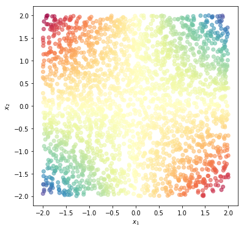
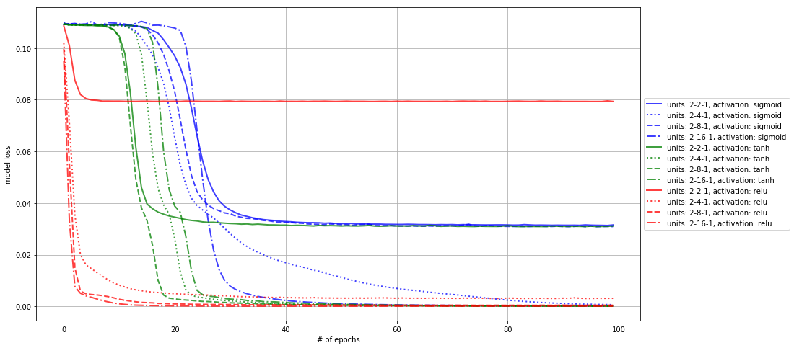
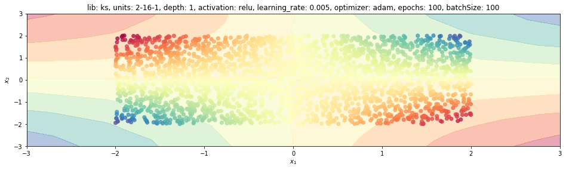
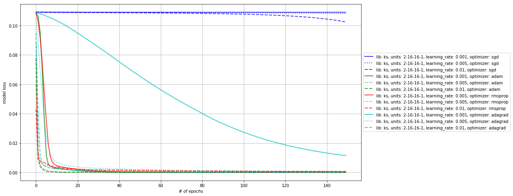
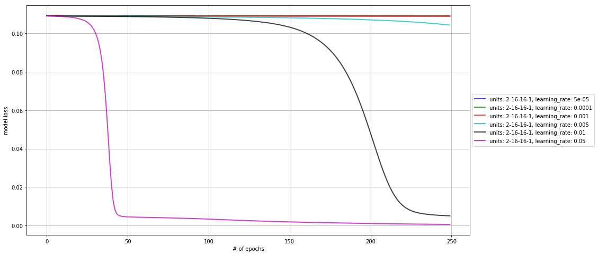
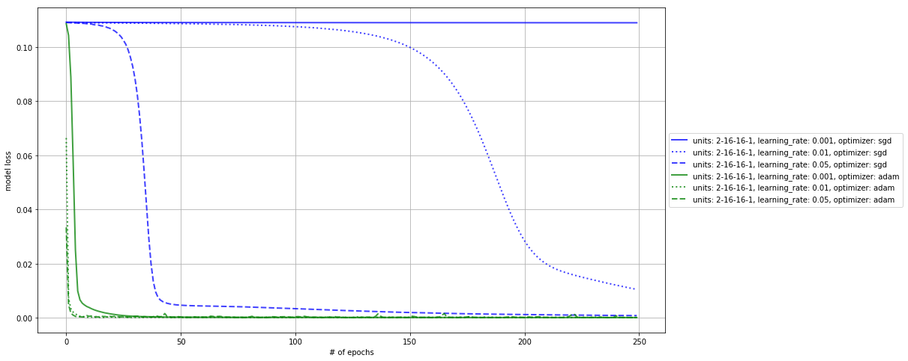

1. Introduction
This post belongs to a new series of posts related to a huge and popular topic in machine learning: fully connected neural networks.
The general series scope is three-fold:
- visualize the model features and characteristics with schematic pictures and charts
- learn to implement the model with different levels of abstraction, given by the framework used
- have some fun with one of the hottest topics right now!
In this new post, we are going to analyze the hyperparameter (HP) space for a regression problem in Keras. We consider the impact of two HPs combined on the model loss, where each combination is listed here:
- activation function and hidden layer size
- optimizer and learning rate
- fixed optimizer (stochastic gradient descent) and learning rate
- optimizer and learning rate, with different values’ ranges
The whole code to create a synthetic dataset and learn a neural network model with any of the four libraries mentioned above is wrapped into a Python class, trainFCNN(), and can be found in my Github repo.
Now we analysis only a few combinations of HP pairs for a regression problem, the product of two inputs.
Here we create a new tnn instance with the prod dataset and display it with plotPoints().
The colder the point colour is, the higher the corresponding value.
tnn = trainFCNN(nb_pnt=2500, dataset='prod')
tnn.plotPoints()

Here the list of HPs with the corresponding set of values used for the analysis.
activations = ['sigmoid', 'tanh', 'relu']
optimizers = ['sgd', 'adam', 'rmsprop', 'adagrad']
learnRates = [1, 5, 10]
nb_hidNeurons = [2, 4, 8, 16]
depths = [1, 2, 3]
epochs = [50, 150, 250]
batchSizes = [50, 100, 250]
libs = ['sk', 'ks', 'tf', 'pt']
2. Activation and hidden layer size
The first comparison regards the impact of the hidden layer size and its activation function.
In general, when the size is not large enough, the optimizer can get stuck (the loss remains almost constant).
The activation function can help either to reach a better result and/or to reach the same result faster, as it is the case for the relu function wrt to tanh and sgd.
hp1s = activations
hp2s = nb_hidNeurons
Nhp2 = len(hp2s)
mdls = []
for hp1, hp2 in itertools.product(hp1s, hp2s):
tnn.train(nb_epochs=100, dims=[hp2], activation=hp1, lib='ks')
mdls.append(deepcopy(tnn))
descrKeys = ['units', 'activation']
plt.figure(figsize=(15, 8))
for kk, tnn in enumerate(mdls):
col, mark = colors[kk // Nhp2], markers[kk % Nhp2]
plt.plot(tnn.lossHistory, label=tnn.mdlDescription(descrKeys), lw=2, ls=mark, color=col, alpha=.75)
plt.grid()
plt.legend(loc='center left', bbox_to_anchor=(1, 0.5))
plt.xlabel('# of epochs')
plt.ylabel('model loss')
plt.show()

We report the model prediction for the new dataset using the last trained model.
mdls[-1].plotModelEstimate(figsize=(16, 9))

3. Optimizer and learning rate
The following comparison regards the impact of the optimizer and the learning rate. In general, the stochastic gradient descent struggles to get interesting results. To investigate this point further, we can extend the learning-rate set of values to see whether this optimizer is really not suitable for this job, even though the right learning rate is selected.
Two optimizers, adam and rmsprop, can help to reach the benchmark without much influence from the learning-rate.
With a proper learning-rate value, adagrad can do the job as well.
hp1s = optimizers
hp2s = learnRates
Nhp2 = len(hp2s)
mdls = []
for hp1, hp2 in itertools.product(hp1s, hp2s):
tnn.train(nb_epochs=150, dims=[16, 16], activation='relu', opt=hp1, lr=hp2*1e-3, lib='ks')
mdls.append(deepcopy(tnn))
descrKeys = ['units', 'lib', 'optimizer', 'learning_rate']
plt.figure(figsize=(15, 8))
for kk, tnn in enumerate(mdls):
col, mark = colors[kk // Nhp2], markers[kk % Nhp2]
plt.plot(tnn.lossHistory, label=tnn.mdlDescription(descrKeys), lw=2, ls=mark, color=col, alpha=.75)
plt.grid()
plt.legend(loc='center left', bbox_to_anchor=(1, 0.5))
plt.xlabel('# of epochs')
plt.ylabel('model loss')
plt.show()

4. Learning rate with fixed optimizer
Let’s here vary the learning rate only across a large set for the sgd optimizer.
hp1s = ['sgd']
hp2s = [.05, .1, 1, 5, 10, 50]
Nhp2 = len(hp2s)
mdls = []
for hp1, hp2 in itertools.product(hp1s, hp2s):
tnn.train(nb_epochs=250, dims=[16, 16], activation='relu', opt=hp1, lr=hp2*1e-3, lib='ks')
mdls.append(deepcopy(tnn))
descrKeys = ['units', 'learning_rate']
colors = ['b', 'g', 'r', 'c', 'k', 'm']
plt.figure(figsize=(15, 8))
for kk, tnn in enumerate(mdls):
col, mark = colors[kk % Nhp2], markers[kk // Nhp2]
plt.plot(tnn.lossHistory, label=tnn.mdlDescription(descrKeys), lw=2, ls=mark, color=col, alpha=.75)
plt.grid()
plt.legend(loc='center left', bbox_to_anchor=(1, 0.5))
plt.xlabel('# of epochs')
plt.ylabel('model loss')
plt.show()

5. Optimizer and learning rate again
The learning rate values were too small in the previous analysis to penalize this optimizer.
Let’s compare it to adam one more time.
hp1s = ['sgd', 'adam']
hp2s = [1, 10, 50]
Nhp2 = len(hp2s)
mdls = []
for hp1, hp2 in itertools.product(hp1s, hp2s):
tnn.train(nb_epochs=250, dims=[16, 16], activation='relu', opt=hp1, lr=hp2*1e-3, lib='ks')
mdls.append(deepcopy(tnn))
descrKeys = ['units', 'learning_rate', 'optimizer']
plt.figure(figsize=(15, 8))
for kk, tnn in enumerate(mdls):
col, mark = colors[kk // Nhp2], markers[kk % Nhp2]
plt.plot(tnn.lossHistory, label=tnn.mdlDescription(descrKeys), lw=2, ls=mark, color=col, alpha=.75)
plt.grid()
plt.legend(loc='center left', bbox_to_anchor=(1, 0.5))
plt.xlabel('# of epochs')
plt.ylabel('model loss')
plt.show()

We can see that now sgd is comparable to adam in terms of model performance, but only for the right value of learning rate and still much slower than the counterpart.